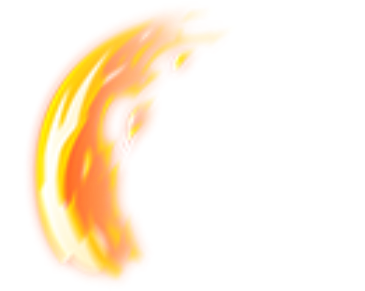
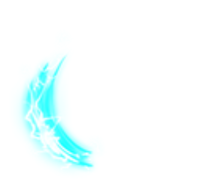
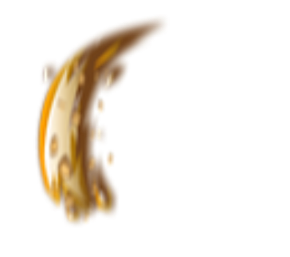
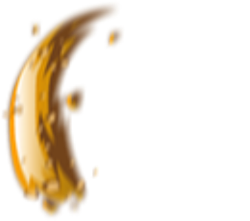
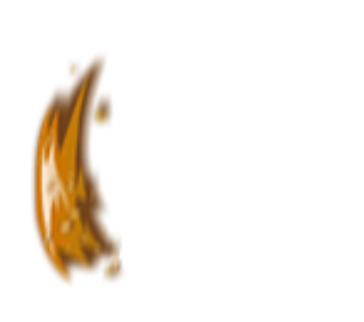
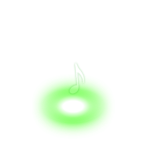
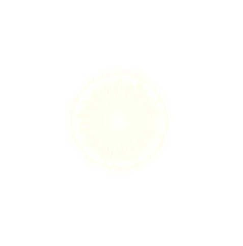

A0005 8 帧
attack_daoguang1 · attack_daoguang1-animation_
attack_daoguang1 · attack_daoguang1-animation_
attack_daoguang2 · attack_daoguang2-animation_

attack_daoguang3 · attack_daoguang3-animation_


attack_daoguang4 · attack_daoguang4-animation_
attack_daoguang5 · attack_daoguang5-animation_



base_attack_daoguang · buff_daoguang-animation_
base_fly_arrow · buff_arrow-animation_
base_fly_fire · buff_fire-animation_


base_fly_poison · buff_poison-animation_
base_fly_thunder · buff_thunder-animation_

caiwenji_phyattack · caiwenji_phyattack-animation_

caiwenji_phyattack · caiwenji_phyattack_1-animation_
caiwenji_skill1 · caiwenji_skill1-animation_


caiwenji_skill1 · caiwenji_skill1_1-animation_
caiwenji_skill2 · caiwenji_skill2-animation_
caiwenji_skill2 · caiwenji_skill2_2-animation_